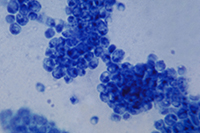
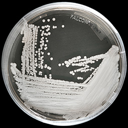

Hi, I'm Cheshta, and I love digging into deep questions pertaining to
Microbiology. I am particularly trained in mycology, elucidating antifungal
resistance mechanism of fungal pathogens viz. Aspergillus and Candida.
Following are the research projects I am working on!

Candida Albicans image courtesy, www.cdc.gov
Management of infections due to Candida Albicans
Candida albicans usually a commensal organism, become pathogenic
in immunocompromised individuals under variety of conditions.I with
my team is trying to develop novel methods to manage this particular
problem using latest microbilogical techneques.

Candida Auris
image courtesy, www.cdc.gov
Management of infections due to Candida Auris
Candida auris is a species of fungus which grows as yeast. It is one of
few species of the genus of Candida which causes candidiasis in humans.
It is multi drug resistant and can be acquired by pateints in hospitals
with weakened immune systems. I am working on to elucidate the basic microbiology
of drug resistance development and finding new drug targets to combat it.